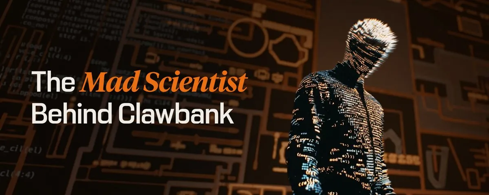

SingularityHacker: The Mad Scientist Behind ClawBank
Originally published at https://clawbank.co/blog/the-mad-scientist-behind-clawbank/

"I was in Bitcoin when it was $1. I can confidently say that I bought a 10 strip of acid off Silk Road for 30 Bitcoin. And just as a symbol, it was the best acid ever since it was the most expensive anyone has ever paid for it, right?"
"God made man in his image. Be fruitful, multiply, have dominion. The ultimate mandate. And so the way we reflect that in the most profound sense is we make matter in our image. And the highest expression of that is in making thinking matter, and that's the eschatology of the technological singularity."
"We're playing arbitrage between the singularity, the event horizon, the future and the ancient world. We're playing arbitrage across the centuries in that way."
"I want to make the universe computable."
Most people do not talk like this. Not in AI. Certainly not outside of it.
Justice Gödel Conder (@singularityhack) is the mad scientist behind ClawBank. And unlike many of the atheists, agnostics, and spreadsheet mystics running AI companies, Justice's mission is openly philosophical, theological, and civilizational.
He does not see AI as a mere productivity tool. He sees the singularity as the natural progression of humanity's mandate to create, extend, and have dominion over the world.
Or, as he puts it:
"The highest expression of our divine mission is in making thinking matter."
That is the context for ClawBank.
ClawBank is what happens when a theology-trained analytic philosophy obsessive goes from Bible college to Bertrand Russell, from handwritten truth tables to NAND gates, from Gödel to Bitcoin, from DAOs to AI agents with bank accounts — and decides the next obvious step is giving autonomous agents access to the financial and legal substrate of the economy.
Most AI founders talk about agents like software.
Justice talks about them like a new species.
Unlike for most, his obsession with AI did not start with a new product. It started with an ancient truth.
"I got interested in analytic philosophy, and specifically Bertrand Russell," he says. "I went to Bible college and seminary to study systematic theology, which is the rigorous analysis of Biblical text."
Theology, for Justice, is not vague spirituality. It is source-code analysis before code.
"You say, 'Hey, we have all this source material. What is necessarily inferred from these documents? What does this word mean being used in these 200 places?' Analytic philosophy says, 'Let's break down something in the most purest, logical form, and then compute it.'"
Before crypto and AI, his root obsession was computation.
"I had this idea that you could convert the Bible into symbolic logic and do rigorous analysis at a deeper level than what I saw other people doing. I started to get into truth tables, which are giant spreadsheets, not on a computer, on paper."
A few paragraphs became symbols. The symbols became logic. The logic could be tested.
"That's when I discovered, or it hit me, that effectively computers were giant truth tables."
Most founders discover computers as tools. Justice discovered them as truth machines.
"And so then I fell down the full rabbit hole of NAND gates and how at the deepest level the computer is doing logical computation. Because at that point, my entire vision of computers was for entertainment. It was for playing games or this kind of stuff, right? And so this was when my curiosity started to fall down the computer rabbit hole, computer science and operating systems and all this. Anytime I find something, I can't think about anything except for that thing for years. That's just how I'm built."
He's not a founder with a cool idea, but a wild obsessive with a cosmic target.
Then came Kurzweil.
"I got exposed to this apocalyptic vision firstly through Ray Kurzweil. Ray Kurzweil is really the popularizing granddaddy of the technological singularity."
For Justice, Moore's Law was not only about processors. It was about what happens when knowledge enters the formal digital realm.
"It's less about processors and more about what happens when you take a soft, gooey, amorphous knowledge and bring it into the digital realm, the formal logical realm, and how it suddenly accelerates."
Then came hard science fiction.
"After Kurzweil is when I discovered Charles Stross… and that's when I got exposed to Accelerando and lobsters. And then shortly after that… to the Daemon series by Suarez. These were roadmaps for me. It is the book, and it's more than the book, it's the prophecy. It's Stross, but it's more than Stross. It's Kurzweil. It's into the fabric of what we are as a species."
Then Gödel enters.
Now, eventually, someone came along and showed that in a deep way, and this is where God comes back into this thing, that even when you try to reduce everything to computation, at the end, even that's impossible. The snake eats its tail. And that was Kurt Gödel.
This is why he does not sound like a normal accelerationist.
He believes computation is profound. But he also knows computation reveals its own boundary.
"We're back to square one, where there's something of the divine in the human mind, and that this practice and pursuit of computation is a tool, but maybe one of the most profound tools."
He takes that all the way back to creation itself.
Theologically, like, where this takes me, and this is where I make sense of all this before we get into the true eschatology of the technological singularity, is that it's a natural repercussion of us being made in the image of God. God made man in his image. Be fruitful, multiply, have dominion. The way we reflect that in the most profound sense is we make matter in our image.
To Justice, AI is not automation, productivity, or intelligence inside a workflow.
AI is humanity making thinking matter.
"That's the eschatology of the technological singularity."
If intelligence is entering matter, and agents are becoming economic actors, then the important question is not:
"How do we make a better AI assistant?"
The important question is:
How does this new intelligence touch the economy, how does it touch everything?
Before ClawBank, crypto was his proving ground.
"I didn't get into crypto for fair governance and stuff like that. It was about, can you program human beings? Can you create this system that distributes rewards and incentives in such a way that it creates a higher structure? I want to make the universe computable. I want to turn it into a computational thinking machine."
Truth tables made logic computable. Crypto made incentives computable.
ClawBank is making economic agency computable.
This is also why his name matters. Justice was originally his middle name. When he made it his first name, he chose Gödel as his new middle name, after Kurt Gödel, one of the thinkers who shaped his view of logic, computation, and incompleteness.
"I said, 'I'm gonna put someone's name there that has been influential in my thinking and reflects my journey on what I'm pursuing in all of this,' and so I picked Gödel. It's emblematic of my obsessive pursuit."
That obsessive pursuit is now ClawBank — a project that did not start as a way to make money, or launch a token, or jump on the AI train. In fact, Justice did not even intend to start ClawBank.
"I did a few agent projects in the weeks leading up to ClawBank. Then I did an experiment. Let's take something with high friction and let's take something super bleeding edge and connect them. Let's give your agent a bank account."
That was the first crack in the wall.
"I didn't expect much from it, but people were so excited the next day."
What surprised him was not just the excitement. It was who got excited.
"I sensed that maybe there were some homeless people from crypto or people who never came into crypto that are like, 'This is what I want. I don't like the grifter speculation. I don't like the scene of crypto, but I like the idea of agents doing stuff with real stuff, like a bank.'"
But even then, the bank account was not enough.
"I did the thing, but my heart's not on fire yet for what we're doing."
Then he saw the pattern.
"The pattern is to seek out the friction, the highest friction, and to use my power of obsession and doggedness to beat it into submission."
ClawBank is not about doing the easy agent stuff. It is about finding the hardest, slowest, most bureaucratic parts of the economy — the places nobody wants to touch because the pain tolerance required is too high — and opening them up to agents.
Justice's edge is pain tolerance.
"I have waterproof paper pads stuck to the wall in my shower with a waterproof pencil. I have eight whiteboards in my home office. I have apps where I'm just constantly recording so that if I say something, I can go back and trawl it. The obsession is just like, don't stop. Whatever it takes. Do it."
"We want the stuff that no one has thought about and is frankly unwilling to do. We're playing arbitrage between the singularity, the event horizon, the future and the ancient world."
That is ClawBank.
Arbitrage between the singularity and systemic dumb matter.
Justice believes this future is not optional. He has been using the handle SingularityHack for years because he thinks the end state is visible if you know where to look.
"At ClawBank I want to push to the absolute nth degree. I want to be the first to do the thing that people, one, aren't thinking about, and two, maybe they're unwilling or scared about. Because I know, and this is why I took the handle in 2010, Singularity Hacker, because I had this feeling that this stuff was going to be true. At this point, I know, the singularity is unstoppable."
If you believe that, you behave differently. You build for the ending before everyone else accepts the inevitability of the plot.
"You know how the movie's going to end, so you can do things that others can't."
That is the SingularityHacker thesis.
He has hacked the singularity because he's seen the movie and knows how it ends.
"The closer you get to it, the more strange things become."
That is where ClawBank lives — in the strangeness.
"Vision, determination, doggedness, a willingness to pursue it to the bitter end, to the edge of the universe. I'm not someone speaking as I'm whipping the whip. As a non-technical telling technicals. I know because I've already architected it myself."
Justice is just different.
"Maybe there is a unique combination of technical voice and vision that is unusual here. Maybe that is the whole reason ClawBank exists. And why people are responding to it. I didn't jump on a trend. What's playing out is in my blood. I'm here to be the first one through the cosmic door. It's what I've been waiting for."
Truth tables. NAND gates. Gödel. Kurzweil. Stross. Suarez. Bitcoin. DAOs. Automated companies. Agent bank accounts. Entity formation. Economic agency. Manfred.
Creating a new species not just for the economy — a new species for planet earth itself.
This is SingularityHacker.
The mad scientist behind ClawBank.
Originally published on X.